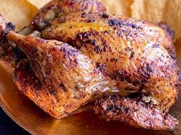

Chicken fajitas

Description
The chicken fajitas is one of the most pupular recipes in Mexico because it's a traditional dish from here
Ingredients
- Chicken
- Cilantro
- Olive oil
- chili powder
- Salt & pepper
Steps
- Bring chicken, water, and 1 tablespoon salt to a boil in a large stockpot. Skim foam.
Add onions, celery, and garlic. Reduce heat. Simmer, partially covered, for 30 minutes
- Remove breast, and set aside. Add carrots. Simmer, partially covered, for 40 minutes
- Remove remaining chicken; discard back and wings. Let cool slightly.
Remove meat from bones, and cut into bite-size pieces
- Stir in desired amount of chicken; reserve the rest for another use. Skim fat. Season with salt